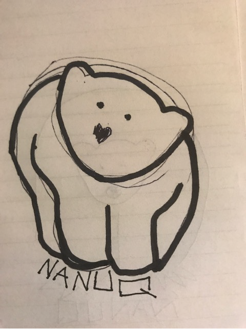

MSCquartets v. 3.3
MSCquartets: Analyzing Gene Tree Quartets under the Multi-species Coalescent.
joint with Hector Banos-Cervantes, Jonathan Mitchell, J.A.Rhodes, K. Wicke (R package).
CRAN download.
Please cite:
J.A. Rhodes, H.D. Banos-Cervantes, J.D. Mitchell and E.S. Allman,
" MSCquartets 1.0: Quartet methods for species trees and networks under the multispecies coalescent model in R. "
Bioinformatics, 37 no. 12 (1766–1768), 2021.
online
Other relevant and helpful citations include:
"Gene tree discord, simplex plots, and statistical tests under the coalescent."
E.S. Allman, J.D. Mitchell and J. Rhodes,
Syst. Biol., 71 no. 4 (2022) 929-942.
https://doi.org/10.1093/sysbio/syab008">doi.
"NANUQ: A method for inferring species networks from gene trees under the coalescent model," E.S. Allman, H. Banos-Cervantes and J.Rhodes, Algorithms for Molecular Biology, 14 no. 24 (2019). online
"Hypothesis testing near singularities and boundaries," E.S. Allman, J. Mitchell and J.Rhodes, Electronic Journal of Statistics, 13 no. 1 (2019) 1250-1293.
SymbolicQuartetCF v. 0.1.7
S. Kong, with A. Englander, J. Garbett, and I. Nometa. (Julia package) available at
GitHub.
Computes symbolic quartet concordance factors under the Network Multispecies
Coalescent Model.